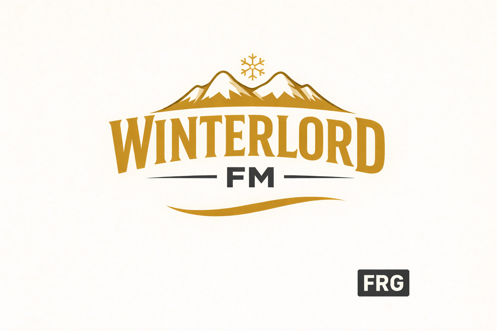

Winterlord FM
The Sound of Eternal Winter ❄⚔
Jetzt live hören

Winterlord FM ist dein Sender für Power Metal, Melodic Metal und Epic Metal. Frostig, heroisch, melodisch – mit Sound wie aus Fantasy-Welten.
Kopfhörer empfohlen. 😉
Stil & Stimmung
Winterlord FM liefert epische Hymnen, schnelle Doublebass, große Refrains und diese Stimmung, die nach Schnee, Legenden und Stärke klingt. Perfekt für Training, Gaming oder Nachtfahrten.
Unser Ziel: ein Radio-Erlebnis, das dich in eine andere Welt zieht – mit Energie und Atmosphäre, aber immer musikalisch sauber kuratiert.
Kontakt & Feedback
Wünsche, Feedback oder Band-Tipps? kontakt@frg-radio.ch